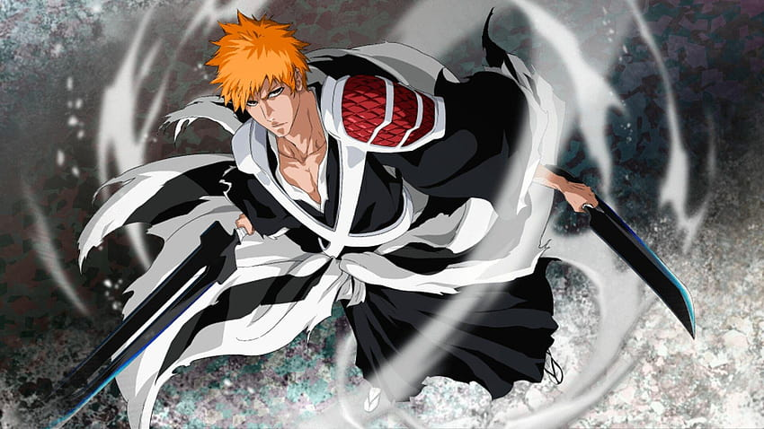
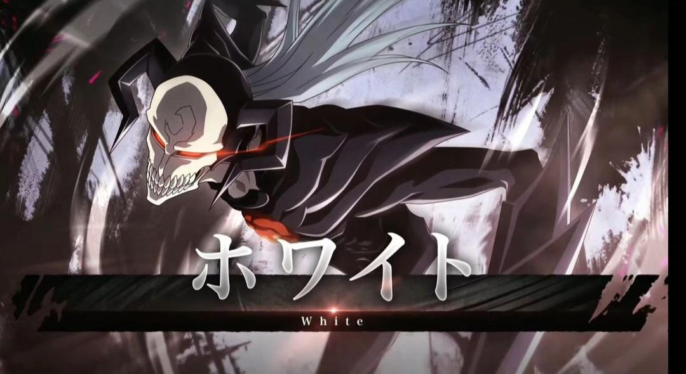
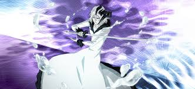
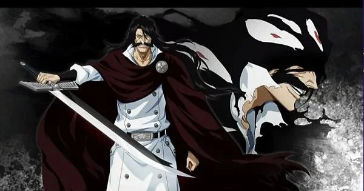

Bleach Brave Souls: Character Introduction

Ichigo Kurosaki (黒崎 一護, Kurosaki Ichigo) is a Human who is also a Substitute Shinigami. Ichigo is the son of Isshin and Masaki Kurosaki,
and older brother of Karin and Yuzu. He is also married to Orihime Inoue and has a son named Kazui Kurosaki. After training at the Soul King Palace, Ichigo wears his standard black shihakushō,
but with some notable changes: he has two white shoulder plates crossing his chest in an X shape that hold his Shikai blades in place, with the first plate on his left shoulder having three
sections adorned with red scales, the second plate having three sections adorned with red scales on his right waist, and a white cloak with black markings tied around his waist.

White (ホワイト, Howaito) is an experimental Hollow used by Sōsuke Aizen many years prior to his defection from Soul Society. It was created with the Souls of several Shinigami.
White is an almost completely black Hollow. It has a white mask and its light white hair reaches down to the middle of its back. It has two long, forward-pointing horns protruding
from the sides of its head, and its Hollow hole, located in its upper chest, is red and filled in. It has two blades in place of its forearms.

Zangetsu (斬月, Slaying Moon) is the manifested spirit of Ichigo Kurosaki's Zanpakutō as well as his inner Hollow. He has been variously called Hollow Ichigo (虚ホロウ一護, Horō Ichigo),
more properly called The Hollow within Ichigo (一護の内面の虚ホロウ, Ichigo no naimen no Horō) or White Ichigo (白一護, Shiro Ichigo).
Zangetsu is the result of the fusion between the Hollow White that Ichigo inherited from his mother and the Shinigami powers he inherited from his father.

Sōsuke Aizen (藍染 惣右介, Aizen Sōsuke) is the former captain of the 5th Division in the Gotei 13. He later leaves Soul Society with his followers, Gin Ichimaru and Kaname Tōsen.
His lieutenant was Momo Hinamori. He formerly served as the lieutenant of the 5th Division under Shinji Hirako. After waging war against Soul Society with an army of Arrancar,
Aizen was defeated by Ichigo Kurosaki and sealed away by Kisuke Urahara, and then imprisoned for his crimes.

Yhwach (ユーハバッハ, Yūhabahha), called "Your Majesty" (陛下, Heika) by his underlings, is the emperor of the Wandenreich and the progenitor of Quincy, known as the
Quincy King (滅却師クインシーの王, Kuinshī no Ō) and Father of Quincy (滅却師クインシーの父, Kuinshī no Chichi).He is also the son of the Soul King and inherited the
latter's signature power, The Almighty, signified by Yhwach bearing the letter A .